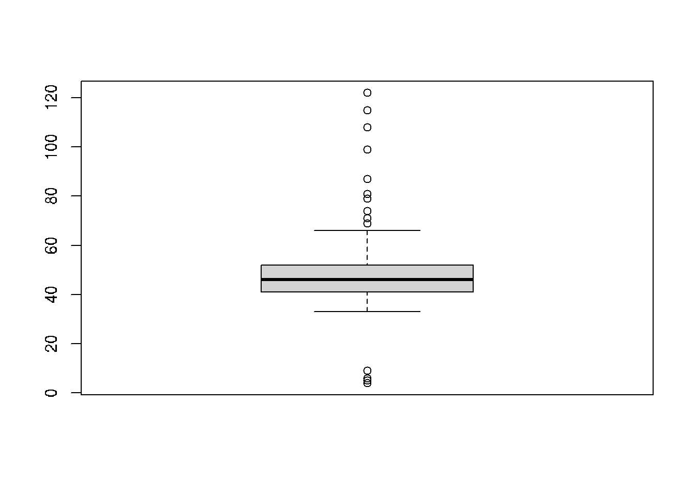

Chapter 5 Primary data analysis
5.1 Handling missing data
- Ignore: Discard samples with missing values.
- Impute: ‘Fill in’ the missing values with other values.
- Accept: Apply methods that are unaffected by the missing data.
library(naniar)
mammographic <- read.csv('./DATA/mammographic.data')
any_na(mammographic)
# Replace ? with NAs: bands
mammographic <- replace_with_na_all(mammographic, ~.x == '?')
any_na(mammographic)
miss_var_summary(mammographic)Vizualysing missing data
library(ggpubr)
a <- vis_miss(mammographic)
# comulative
b <- vis_miss(mammographic, cluster=TRUE)
c <- gg_miss_case(mammographic)
ggarrange(a, b, c + rremove("x.text"),
labels = c("frame view", "cumulative", "missing"),
ncol = 3, nrow = 1)Missing data types
- MCAR: Missing Completely At Random
- MAR: Missing At Random
- MNAR: Missing Not At Random
| Type | Imputation | Deletion | Visual cues |
|---|---|---|---|
| MCAR | Recommended | Will not lead to bias | Random or noisy patterns in missingness clusters |
| MAR | Recommended | May lead to bias | Well-defined missingness clusters when arrangin for a particular variable(s) |
| MNAR | Will lead to bias | Will lead to bias | Neither visual pattern above holds |
It can be difficult to ascertain the missingness type using visual inspection!
Internal evaluation
Compair distributions with/without imputed values:
- Mean
- Variance
- Scale
Exterlan evaluation Build ML models with/without imputated values and evaluate impact of imputation method on ML model performance:
- Classification
- Regression
- Clustering
- etc.
Ideally imputation should not bring big differences.
Mean and linear imputations
library(naniar)
library(simputation)
# Impute with the mean
imp_mean <- bands %>%
bind_shadow(only_miss = TRUE) %>%
add_label_shadow() %>%
impute_mean_all()
# Impute with lm
imp_lm <- bands %>%
bind_shadow(only_miss = TRUE) %>%
add_label_shadow() %>%
impute_lm(Blade_pressure ~ Ink_temperature) %>%
impute_lm(Roughness ~ Ink_temperature) %>%
impute_lm(Ink_pct ~ Ink_temperature)Combining multiple imputation models
# Aggregate the imputation models
imp_models <- bind_rows(mean = imp_mean,
lm = lmp_lm,
.id = "imp_model")
head(imp_models)5.2 Dealing with outliers
- The 3-sigma rule (for normally distributed data)
- The 1.5*IQR rule (more general)
Outliers:
- any value lower that \(Q1 - 1.5 x IQR\)
- or any higher than \(Q3 + 1.5 x IQR\)
Multivariate methods
* Distance-based: K-nearest neighbors (kNN) distance
* Density-based: Local outlier factor (LOF)
**1.5*IQR rule**
Outliers:
- any value lower that \(Q1 - 1.5 x IQR\)
- or any higher than \(Q3 + 1.5 x IQR\)
Distance-based methods
- Average distance to the K-nearest neighbors
Density-based methods
- Number of the neighboring points within a certain distance
Assumption: outliers often lie far from their neighbors
Local Outlier Factor (LOF)
* Measures the local deviation of a data point with respect to its neighbors.
* Outliers are observations with substantially lower density than their neighbors.
get.knn() from FNN package
- Each observation \(x\) has an associated score LOF(\(x\))
LOF(\(x\)) \(\approx\) 1 similar density to its neighbors
LOF(\(x\)) < 1 higher density than neighbors (inlier)
LOF(\(x\)) > 1 lower density than neighbors (outlier)
lof() function from dbscan package
What to do with outlier observations?
1. Retention: Keep them in your dataset and, if possible, use algorithms that are robust to outliers.
- e.g. K nearest-neighbors (kNN), tree-based methods (decision tree, random forest)
2. Imputation: Use an imputation method to replace their value with a less extreme observation.
- e.g. mode imputation, linear imputation, kNN imputation.
3. Capping: Replace them with the value of the 5-th percentile (lower limit) or 95-th percentile (upper limit).
4. Exclusion: Not recommended, especially in small datasets or those where a normal distribution cannot be assumed.
cars <- read.csv('./DATA/cars.csv')
cars <- cars[,1:3]
head(cars)## distance consume speed
## 1 28 5 26
## 2 12 42 30
## 3 112 55 38
## 4 129 39 36
## 5 185 45 46
## 6 83 64 50boxplot(cars$consume)
consume_quartiles <- quantile(cars$consume)
consume_quartiles## 0% 25% 50% 75% 100%
## 4 41 46 52 122# Scale data and create scatterplot: cars_scaled
require(dplyr)
glimpse(cars)## Rows: 388
## Columns: 3
## $ distance <int> 28, 12, 112, 129, 185, 83, 78, 123, 49, 119, 124, 118, 123, 247, 124, 173, 334, 118, 259, 118, 253, 142, 179, 118, 123, 124, 184, 184, 183, 184, 123, 118,…
## $ consume <int> 5, 42, 55, 39, 45, 64, 44, 5, 64, 53, 56, 46, 59, 51, 47, 51, 56, 51, 49, 47, 55, 59, 57, 47, 59, 41, 57, 58, 55, 57, 53, 5, 56, 48, 43, 57, 52, 74, 48, 6…
## $ speed <int> 26, 30, 38, 36, 46, 50, 43, 40, 26, 30, 42, 38, 59, 58, 46, 24, 36, 32, 39, 40, 32, 38, 37, 36, 62, 57, 21, 28, 29, 35, 51, 29, 58, 40, 36, 36, 37, 26, 23…cars_scaled <- as.data.frame(scale(cars))
plot(distance ~ consume, data = cars_scaled,
main = 'Fuel consumption vs. distance')# Calculate upper threshold: upper_th
upper_th <- consume_quartiles[4] +
1.5 * (consume_quartiles[4] - consume_quartiles[2])
upper_th## 75%
## 68.5# Print the sorted vector of distinct potential outliers
sort(unique(cars$consume[cars$consume > upper_th]))## [1] 69 71 74 79 81 87 99 108 115 122library(FNN)
# Compute KNN score
cars_knn <- get.knn(data = cars_scaled, k = 7)
cars1 <- cars
cars1$knn_score <- rowMeans(cars_knn$nn.dist)
# Print top 5 KNN scores and data point indices: top5_knn
(top5_knn <- order(cars1$knn_score, decreasing = TRUE)[1:5])## [1] 320 107 335 56 190print(cars1$knn_score[top5_knn])## [1] 4.472813 2.385471 2.246905 2.122242 1.740575# Plot variables using KNN score as size of points
plot(distance ~ consume, data = cars1, cex = knn_score, pch = 20)
library(dbscan)
# Add lof_score column to cars1
cars1 <- cars
cars1$lof_score <- lof(cars_scaled, minPts = 7)
# Print top 5 LOF scores and data point indices: top5_lof
(top5_lof <- order(cars1$lof_score, decreasing = TRUE)[1:5])## [1] 165 186 161 228 52print(cars1$lof_score[top5_lof])## [1] 2.606151 2.574906 2.328733 2.252610 2.027528# Plot variables using LOF score as size of points
plot(distance ~ consume, data = cars1,
cex = lof_score, pch = 20)